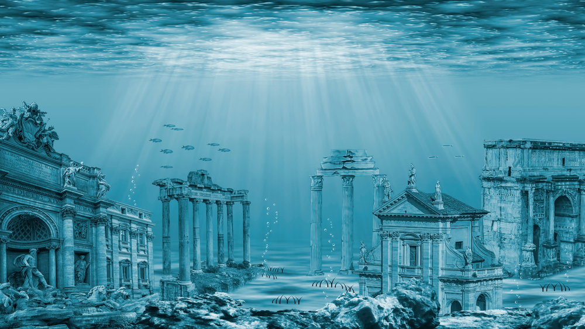
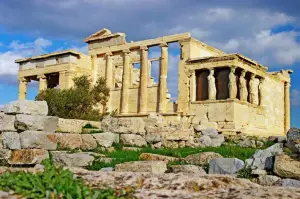
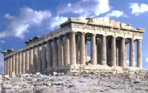
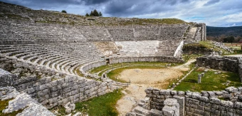
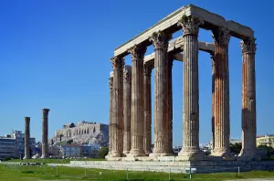

MONUMENTOS MITOLOGÍA GRIEGA
| MONUMENTOS | DEFINICIÓN | FOTO |
| CIUDAD PERDIDA DE ATLANTIS | Era una inmensa isla habitada por un pueblo rico, sabio, justo y generoso, que estaba gobernado por el dios de los mares, Poseidón. Cuando los atlantes se volvieron avariciosos, Zeus decidió castigarlos con maremotos y erupciones volcánicas hasta el punto de que su isla quedó destruida en una sola noche. La leyenda cuenta que los restos de la Atlántida descansan en el fondo del mar bajo las islas Canarias, y que este archipiélago está formado por los picos y las montañas más altas de este continente mitológico. |  |
| ERECTEIÓN | Es un templo griego en el lado norte de la Acrópolis de Atenas en honor
a los dioses Atenea Polias y Poseidón y a Erecteo, rey mítico de la ciudad. Su nombre significa
"el (templo) de Erecteo". De orden jónico, áptero, atribuido al arquitecto Menesicles es uno de
los más bellos monumentos arquitectónicos griegos. Está hecho de mármol pentélico. Se construyó
entre el año 421 a.C. y 406 a.C.Uno de los motivos de su construcción fue la necesidad de
preservar los
sitios sagrados, ya que reemplazó al Antiguo templo de Atenea, que se encontraba entre el
Partenón y el emplazamiento actual y que fue destruido por los persas en 480 a. C., durante las
Guerras Médicas.
El templo no está dedicado a una única divinidad, sino que está constituido por varios santuarios. Tres de estos santuarios están dedicados a Atenea, Poseidón y Zeus. Se supone que los otros dos santuarios están dedicados a Cécrope y Erecteo, dos reyes míticos del Ática. El Erecteón agrupaba algunas de las reliquias más antiguas y más sagradas de los atenienses. Es en este lugar donde tuvo lugar la disputa entre Atenea y Poseidón, donde se puede ver la marca de su tridente sobre una roca. Se hallaban también allí el Paladio, una estatua de Atenea caída del cielo, según la leyenda, y consagrada por Cécrope; las tumbas de Cécrope y de Erecteo; una capilla dedicada a Pándroso, la hija de Cécrope; un pozo de agua salada y el olivo sagrado, que Atenea dio a la población tras su disputa con Poseidón. |
 |
| MONTE DEL OLIMPO | Era el hogar de los principales dioses del panteón griego, presididos
por Zeus, también es la montaña más alta de Grecia. En realidad no se trata de un monte único,
como sucede en la mayoría de los casos, sino de una cadena montañosa, dentro de la cual destaca
la cumbre del Olimpo con sus 2917 metros de altura sobre el nivel del mar.
Su forma viene de la erosión de la lluvia y el viento. Esta propició una torre aislada a casi 3.000 metros. Cuenta con muchos picos y su forma es casi circular. La montaña tiene una circunferencia de 150 kilómetros, un diámetro de 26 kilómetros y 500 kilómetros cuadrados de área. |
 |
| PARTENÓN | Se encuentra dentro de la Acrópolis de Atenas y es el edificio más
emblemático del sitio arqueológico, dedicado a una de las diosas más importantes de la mitología
griega: Atena, ya que era la protectora de la ciudad.
Lo que se destaca de esta construcción es su tamaño, ya que es uno de los edificios más grandes de la Acrópolis. Además, si se considera que fue construido cientos de años antes de Cristo, la admiración es aún mayor. En cuanto a las dimensiones, prueba de su imponencia, el Partenón tiene más de 30 metros de ancho y casi 70 metros de largo. Las columnas, que son de estilo dórico, miden más de 10 metros de altura. En cuanto al material, el Partenón está hecho íntegramente en mármol. |
 |
| TEATRO DE DODONA | El teatro está situado dentro del Santuario de Dodona, que se encuentra
en la región de Epiro, al pie del monte Tomaros, en los montes Pindo, cerda de la actual
frontera de Grecia y Albania, en una zona montañosa que dominaron y controlaron los molosos en
el siglo V a.C.
El rey Pirro de Epiro lo construyó en el siglo III a.C., como una extensión del santuario de Dodona. Fue destruido por los etolios en el año 219 a.C. pero posteriormente se reconstruyó hasta que, en el año 167 a.C., fue nuevamente destruido por tropas del Imperio Romano. En el año 148 a. C., el teatro fue reformado y reutilizado para espectáculos de fieras y lucha durante el reinado del emperador Augusto, situación que perduró hasta el siglo IV. Entre 1875 y 1878 fue excavado por primera vez por arqueólogos griegos, y en el siglo XX, tras nuevas excavaciones, se restauraron algunas partes para recuperar sus funciones y aspecto de teatro clásico. |
 |
| TEMPLO DE ZEUS OLÍMPICO | Es uno de los templos más impresionantes, no solo de Atenas, si no de toda la antigüedad. Sus desorbitadas proporciones son realmente impactantes, apesar de su avanzado estado de deterioro. En origen, el edificio estaba sustentado por 104 columnas de orden corintio y tenía unas dimensiones de 180 metros de longitud por 40 de anchura. Durante el período helenístico y romano, fue el templo más grandes del mundo. |  |